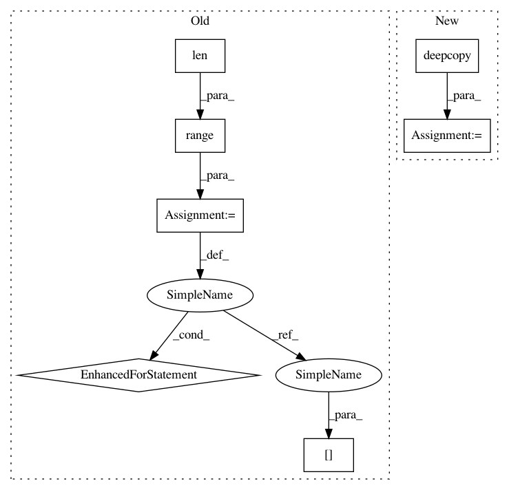

5b3af9ff43bc61f8034f1202a2b57f21c8ee3771,autokeras/graph.py,Graph,_insert_new_layers,#Graph#Any#Any#,346
Before Change
def _insert_new_layers(self, new_layers, output_id):
node_ids = []
n_new_layers = len(new_layers)
for i in range(n_new_layers):
node_ids.append(self._add_new_node())
for i in range(n_new_layers - 1):
self._add_edge(new_layers[i], node_ids[i], node_ids[i + 1])
self._add_edge(new_layers[n_new_layers - 1], node_ids[n_new_layers - 1], self.adj_list[output_id][0][0])
self._redirect_edge(output_id, self.adj_list[output_id][0][0], node_ids[0])
def _block_end_node(self, layer_id, block_size):
After Change
self._insert_new_layers(new_layers, output_id)
def _insert_new_layers(self, new_layers, output_id):
new_node_id = self._add_node(deepcopy(self.node_list[self.adj_list[output_id][0][0]]))
temp_output_id = new_node_id
for layer in new_layers[:-1]:
temp_output_id = self.add_layer(layer, temp_output_id)
In pattern: SUPERPATTERN
Frequency: 3
Non-data size: 7
Instances
Project Name: jhfjhfj1/autokeras
Commit Name: 5b3af9ff43bc61f8034f1202a2b57f21c8ee3771
Time: 2018-08-01
Author: jin@tamu.edu
File Name: autokeras/graph.py
Class Name: Graph
Method Name: _insert_new_layers
Project Name: jhfjhfj1/autokeras
Commit Name: 5b3af9ff43bc61f8034f1202a2b57f21c8ee3771
Time: 2018-08-01
Author: jin@tamu.edu
File Name: autokeras/graph.py
Class Name: Graph
Method Name: _insert_new_layers
Project Name: idaholab/raven
Commit Name: b678edc4f04ab621b9f336d00eec1b6f0f1ac50a
Time: 2017-07-10
Author: andrea.alfonsi@inl.gov
File Name: framework/Models/EnsembleModel.py
Class Name: EnsembleModel
Method Name: _externalRun